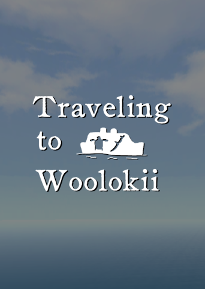
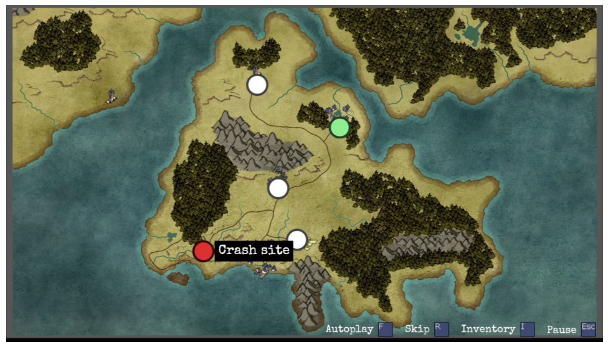
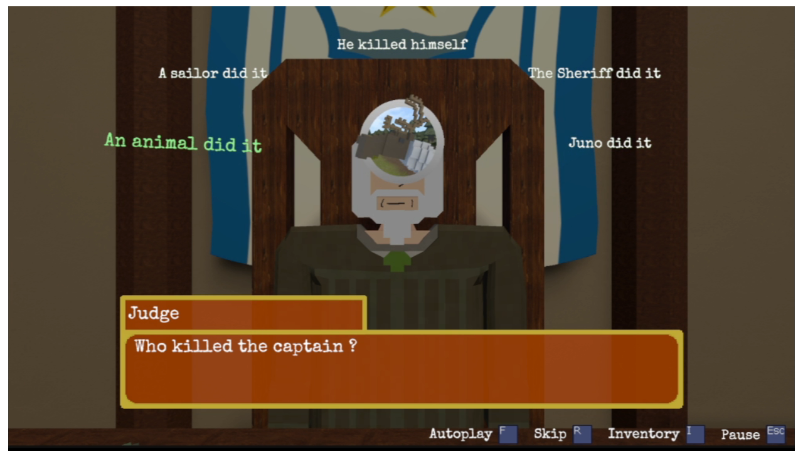
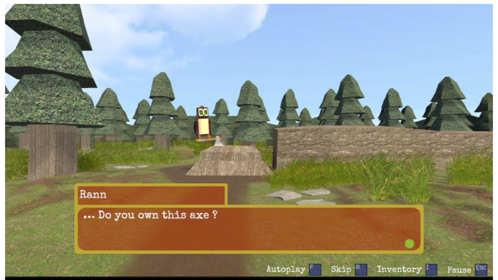
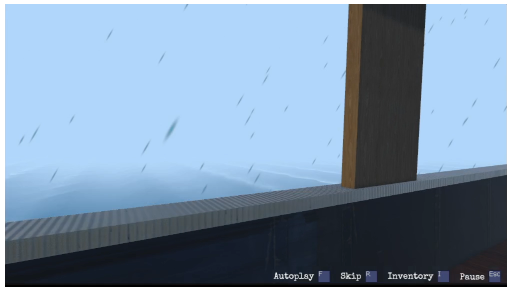

Developer
Julien Oudot / Voxel Caribou
Publisher
Julien Oudot / Voxel Caribou
Genres
Point & Click, Visual Novel,
Adventure, Mystery
Status
In development
Release Date
Demo : Early November 2026
Full release : 2027
Platforms
Itch.io
Steam (Store page in progress)

Solve cases, investigate mysteries, and explore the Island of Woolok in this chapter-based Point & Click / Visual Novel.
What you believed was a simple boat trip ended in disaster. You awoke alone on a strange, yet strangely familiar island. To survive, you'll need to solve cases, help people, and investigate the mysteries around you. The mysteries you'll uncover will be diverse in nature, and each chapter will feel like a completely new story to discover.
Interact with the 3D environment to find clues, NPCs, and more. The different environments are interconnected, and you'll need to explore your surroundings to find new points of interest, which in turn will allow you to find new clues for your cases. Side quests can also be found by exploring.
To help you navigate the island faster, you'll be able to fast travel between the different points of interest you discovered.
In more linear phases, you may be required to use the clues you found during Point & Click phases to solve cases. Linear phases vary in length and in gameplay depending on the chapter.



